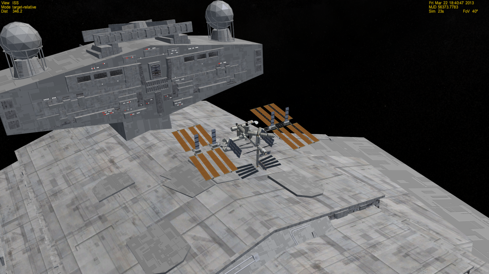
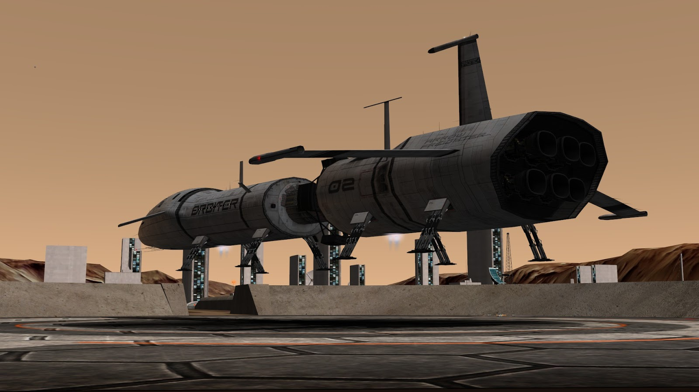
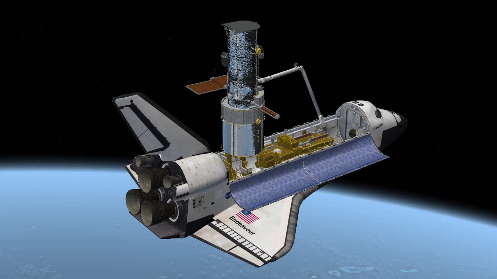
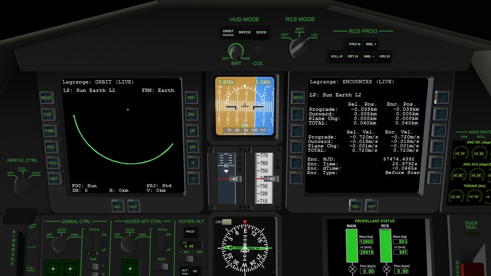

Orbiterのあそびかた
「ダウンロードしてみたけど、何をするゲームなのかわからない」という方のために、「Orbiterのあそびかた」をいくつかご紹介します。
リアルとフィクション
「リアル」と「フィクション」というふたつの軸に基づいて、Orbiterのプレイスタイルを4つに分類することができます。
スペースオペラの世界へ
いわゆるスペースオペラに登場するような機体を使って、この宇宙を自由に飛び回ることができます。
Orbiterは現実の物理法則を再現したシミュレーターですが、必ずしもそれに縛られる必要はありません。
架空世界の宇宙戦闘機の、数秒で大気圏内を突破するような凄まじい加速を体験したり、亜光速・超光速での太陽系の「狭さ」を体験したりするのも、それはそれで楽しいものです。

WarpDrive MFD
Imperial Star Destroyer: 右のDLLが必要 Spacecraft3 / Multistage2 / Stage.dll
20XX年宇宙の旅
架空の宇宙船を使って、あえて「現実的な」ミッションに挑戦する、ということもできます。
現実の宇宙開発の少し先を行くようなミッションを自分で考えて飛ぶ、というのはOrbiterではとてもポピュラーな遊び方です。
例えば、原子力エンジンを搭載した宇宙船を使って、数年がかりの有人木星ミッションに挑戦することもできます。
また、現実に存在しうる技術レベルの架空のロケットを使って、現実にありうるような宇宙探査ミッションを計画する、ということもできます。
Orbiterのコミュニティでは、世界中のユーザーが「もしうちの国にこんな宇宙開発計画があったら」という架空のMODを製作・公開しています。

UCGOとUMMU
XR2 Ravenstar
Space Elevator
史実を追体験する
現実に存在する、もしくは存在した宇宙船・探査機を使って、史実通りのミッションを遂行する、という遊び方もあります。
Orbiterで史実ミッションを体験することは、宇宙船・探査機について知る、宇宙探査を実現するための原理について理解する、ということでもあります。
現実の宇宙船の操作がいかに複雑であるか、小さな探査機が宇宙を旅するためにどれだけ高度なテクニックを駆使しているか、といったことを、「自分で飛ばしてみる」ことで学ぶことができます。
宇宙船の再現度はMODによって異なっており、徹底的に史実を再現することを目指したものもあれば、手軽に操作できるように簡略化されたものもあります。

「冷たい方程式」を解く
宇宙船そのもののリアルさは忘れて、「物理法則のリアル」を追求した遊び方もあります。
太陽系ではさまざまな天体が相互に重力によって影響を及ぼしあっており、これを応用することで、一見不可能に思えるようなミッションでも遂行できることがあります。
例えば「燃料が足りなくて目的地にたどりつけない」という状況を設定して、それをひっくり返す、「不可能を可能にする」方法を考えるわけです。
デフォルトではChallengesフォルダにすこし難しいミッションが収録されているほか、公式フォーラムではユーザーが互いにお題を出して解法を探す、ということも長年おこなわれています。
Tutorials & Challenges - Orbiter-Forum

Orbiterチュートリアルについて
このサイトに掲載しているチュートリアルは、非公式のものであって、「Orbiterのプレイヤーならこれぐらいはできて当然」という種類のものではありません。
あくまでも「できるだけ多くの宇宙船で、さまざまなミッションに挑戦できるようにする」ために書いたものです。
ランデブーができればソユーズでISSまで行けるようになるし、惑星間航行ができればディスカバリー号で木星へ飛べるようになったりしますが、そういうことに興味がなければスルーしてもかまいません。
MODによっては空対空ミサイルを撃ったり車に乗ってドライブしたりできるものもあります。ほかのフライトシムと同じく「景色を楽しみながら飛ぶ」ことを目的とするプレイヤーもいます。ユーザーの数だけ遊び方があるのがOrbiterの魅力であって、自分なりの楽しみ方を見つけていただければ幸いです。